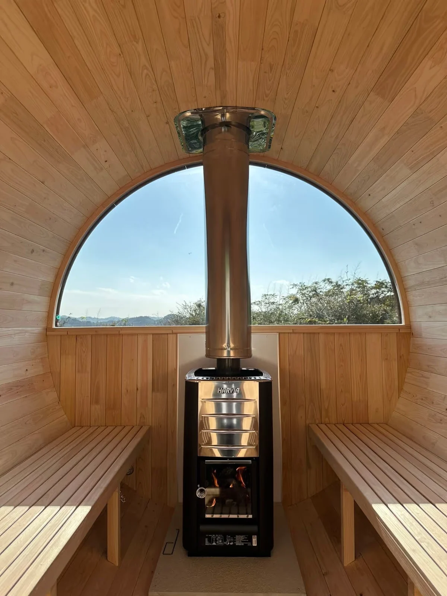

使ったあとは、清潔に。
座面や床を清掃し、取扱説明書に従って換気・乾燥を。湿気を残さない管理を心がけます。
Rink SAUNA
10年保証
初年度1年保守付き

適切な使用・管理のもと、対象部材を10年間保証します。
初年度の保守には回数・地域等の条件があり、2年目以降の工賃・出張費・送料等は有償です。
10年保証の範囲
1年目
初年度は、部材の保証に加えて
通常の修理対応をサポートします。
2—10年目
対象部材の保証は、そのまま継続。
修理等の費用は事前にお見積りします。
初年度の無償訪問は1台につき2回まで。北海道・沖縄・離島の交通費・宿泊費、特殊車両・特殊施工は初年度から有償です。
対象：Rink製 i-barrel Small／Medium／Large・水風呂本体。最初の購入者に適用。納品日（セルフビルドはキット納品日）から起算します。
費用の範囲
| 費用項目 | 初年度 | 2〜10年目 |
|---|---|---|
| 対象部材 | 無償 | 無償 |
| 通常の修理工賃 | 無償※1 | 有償 |
| 出張交通費・宿泊費 | 無償※2 | 有償 |
| 部材送料 | 無償※1 | 有償 |
| 特殊車両・特殊施工 | 有償 | 有償 |
有償対応は、訪問・診断を含め、事前のお見積りをご了承いただいてから行います。
対象・対象外
10年保証の対象
規程に定める対象部材
適切な使用・管理のもとで生じた、
使用に支障のある不具合が対象です。
10年保証の対象外
本体の保証とは別に確認
ストーブ・チラー等は
各メーカーの保証をご確認ください。
取扱説明書等に沿って適切に使用・管理した状態で生じた、使用に支障のある不具合。経年の雨漏り・腐食・反り等を含みます。
症状の程度、設置・使用・管理状況を確認し、規程に沿って判断します。ストーブ・チラー等は各メーカー保証をご確認ください。
日々のお手入れ

座面や床を清掃し、取扱説明書に従って換気・乾燥を。湿気を残さない管理を心がけます。
木材は伸び縮みします。バンドや建付け、塗装の状態を確認し、指定のメンテナンスを行います。
雨漏りや腐食、反りなど、使用に支障のある症状は写真を添えてご相談ください。
指定のメンテナンスや軽微なセルフ補修は購入者に行っていただきます。代行、定期清掃・定期点検は無償保守に含みません。
バンド・塗装・清掃のお手入れ方法困ったとき
型番・納品時期・症状と、状況がわかる写真をご用意ください。
内容を確認し、部材発送または修理を手配します。有償の場合は事前にお見積りします。
訪問は対応可能日から調整。保証期間内に受け付けた対象不具合は受付時の条件を適用します。

Rink SAUNA ご相談窓口
購入後の気になることも、お問い合わせください。